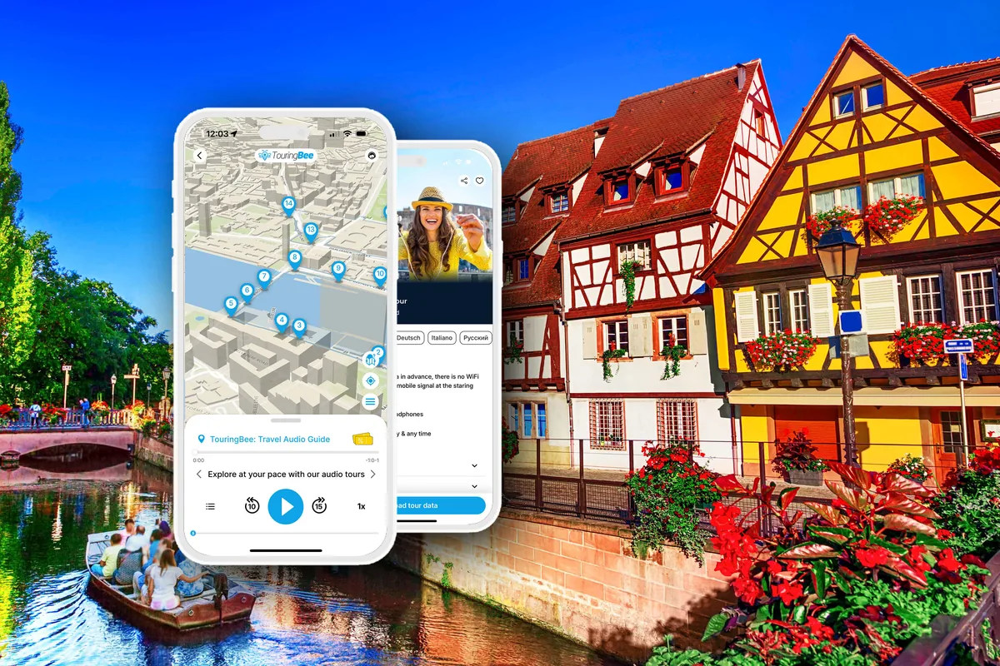

Stare Miasto w Colmarze jest niewielkie i łatwo zwiedzać je samodzielnie. Fasady, place i kanały kryją jednak więcej, niż widać podczas zwykłego spaceru. Audioprzewodnik TouringBee prowadzi gotową trasą przez Stare Miasto i opowiada o domach i uliczkach, które mijacie po drodze.
Idziecie sami, bez grupy i bez harmonogramu, a każde nagranie włączacie, kiedy chcecie. Spodobało wam się jakieś miejsce? Zostańcie dłużej. Macie ochotę na kawę? Zróbcie przerwę.

Audioprzewodnik po Starym Mieście w Colmarze
Trasa po Starym Mieście z opowieścią w każdym punkcie: zwiedzacie sami i we własnym tempie.
9,99 € · jednorazowa płatność, bez subskrypcji
- 27 punktów, około półtorej godziny
- W pełni offline po pobraniu
- Mapa offline pokazuje, gdzie jesteście; każde nagranie uruchamiacie sami
- Po angielsku, francusku, niemiecku, włosku, polsku, hiszpańsku i rosyjsku
- iOS i Android, dostęp na rok
- Trasa i teksty przygotowane przez profesjonalnych autorów
- Ocena 4,6 na 5 · ponad 1000 podróżnych przeszło już tę trasę
Przed zakupem możecie posłuchać minutowego wstępu.
Dla kogo
Audioprzewodnik sprawdzi się, jeśli chcecie poznać historię Colmaru, nie dopasowując się do godziny zbiórki grupy ani do tempa przewodnika. Możecie ruszyć rano albo późnym popołudniem, zatrzymać się przy domu, który wam się podoba, pominąć to, co mniej was interesuje, i wrócić do nagrań innego dnia. To dobre rozwiązanie także dla rodzin z dziećmi i dla tych, którzy wolą zwiedzać miasto bez wycieczki.
Jeśli chcecie zadawać pytania po drodze albo porozmawiać z kimś na żywo, lepiej wybrać zwiedzanie z przewodnikiem: audioprzewodnik opowiada, ale nie odpowiada.
Jak to działa
- Kupujecie audioprzewodnik i dostajecie e-mail z instrukcją aktywacji.
- Instalujecie aplikację TouringBee na iOS lub Androidzie i aktywujecie zakup.
- Wcześniej pobieracie wycieczkę do aplikacji, najlepiej przez Wi-Fi. Internet jest potrzebny tylko do zakupu, aktywacji i pobrania: potem wycieczka i mapa działają offline.
- Idziecie do punktu startowego i podążacie trasą na mapie. Mapa pokazuje, gdzie jesteście, a nagranie w każdym punkcie włączacie sami: nic nie uruchamia się automatycznie.
Na starcie nie czeka żaden przewodnik, a wycieczka nie jest przypisana do konkretnej godziny: to wy decydujecie, kiedy zacząć. Możecie przerwać w połowie i wrócić później tam, gdzie skończyliście; dostęp jest ważny rok.
Trasa: którędy prowadzi i czego posłuchacie
Spacer zaczyna się w Parc du Champ de Mars, prowadzi przez historyczne centrum i kończy się w Małej Wenecji. Całą trasę pokonuje się pieszo, między punktami nie trzeba niczym dojeżdżać. Po zakończeniu możecie zostać nad wodą albo przejść do hali targowej.
Trasa prowadzi przez historyczne centrum, gdzie stoją Dom pod Głowami, Dom Pfistera, kolegiata św. Marcina i inne znane miejsca. Nie obejmuje jednak wszystkiego, co warto w mieście zobaczyć.
Listę zabytków Colmaru łatwo znaleźć samemu. Audioprzewodnik daje coś innego: gotową trasę przez historyczne centrum i opowieści o jego przeszłości, domach i legendach. Dowiecie się na przykład, dlaczego Colmar miał kiedyś własną monetę i co łączy miasto z japońską animacją. Resztę zostawiamy na spacer.
Co jest w cenie, a czego nie ma
Za 9,99 € dostajecie:
- audioprzewodnik w aplikacji na iOS i Androida;
- mapę offline z trasą;
- nagrania do 27 punktów;
- ilustracje, które pomagają rozpoznać miejsca na trasie;
- rok dostępu do wycieczki.
Na spacer potrzebny jest własny smartfon. Warto też zabrać słuchawki: tak wygodniej słuchać. Bilety do muzeów nie są wliczone w cenę: kupuje się je osobno, jeśli zdecydujecie się wejść do środka.
Przed spacerem
Pobierzcie wycieczkę wcześniej, żeby nie zależeć od zasięgu na miejscu, i sprawdźcie, czy telefon jest naładowany. Załóżcie wygodne buty: na Starym Mieście jest dużo bruku. Jeśli planujecie wejść do kościołów, wybierzcie strój odpowiedni dla miejsca kultu.
Zacząć możecie o dowolnej porze. Jeśli po drodze chcecie zajrzeć do hali targowej, kościoła albo muzeum, sprawdźcie wcześniej godziny otwarcia. Spacer łatwo też wpleść w jeden dzień w Colmarze: rano Stare Miasto, a po obiedzie muzeum albo rejs łodzią.
Czytaj dalej
- Pełny przewodnik po Colmarze — wszystko o mieście przed wyjazdem.
- Colmar z dziećmi — jeśli podróżujecie z dziećmi.
- Gdzie nocować w Colmarze — jeśli zostajecie na noc.
- Kiedy jechać do Colmaru — jakie miasto zobaczycie w każdej porze roku.
- Wszystkie przewodniki
Najczęstsze pytania
Ile trwa spacer?
Zwykle około półtorej godziny. Jeśli zatrzymujecie się na zdjęcia albo wchodzicie do kościołów, hali targowej czy kawiarni, zarezerwujcie więcej czasu.
Gdzie zaczyna się trasa?
W Parc du Champ de Mars, a kończy w Małej Wenecji.
Czy potrzebny jest internet?
Tylko do zakupu, aktywacji i pobrania wycieczki. Podczas spaceru wycieczka i mapa działają offline.
Czy trzeba rezerwować godzinę?
Nie. Wycieczka nie jest przypisana do konkretnej godziny: po aktywacji zaczynacie, kiedy chcecie, a dostęp jest ważny rok.
W jakich językach jest audioprzewodnik?
Po angielsku, francusku, niemiecku, włosku, polsku, hiszpańsku i rosyjsku.
Zwiedzaj Colmar z historiami w słuchawkach
27 przystanków, półtorej godziny, całkowicie we własnym tempie. Jedna płatność, działa offline, dostęp przez rok.
Niektóre linki na tej stronie to linki partnerskie do Booking.com. Jeśli zarezerwujesz przez nie, możemy otrzymać prowizję bez dodatkowych kosztów dla ciebie. Audioprzewodnik TouringBee to nasz własny produkt. Zobacz naszą informację o linkach partnerskich.